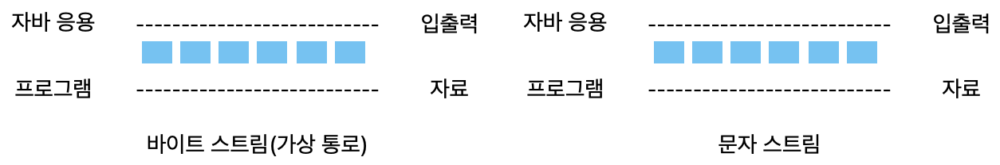
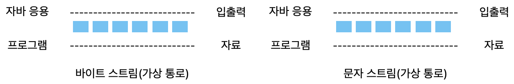

자바 I/O
자바의 입출력(I/O)과 스트림, FileInputStream, FileOutputStream
🍎 스트림이란?
- 자바에서 모든 입출력은 스트림(stream)을 통해 이루어짐
- 자료 흐름에서 물의 흐름과 같다는 의미
- 입출력 장치와 무관하고 일관성 있게 프로그램을 구현할 수 있도록 가상 통로인 스트림을 제공함
-
자료를 읽어 들이려는 소스(source)와 자료를 쓰려는 대상(target)에 따라 각각 다른 스트림 클래스를 제공함.

-
단방향으로 자료가 이동함. 입력과 출력을 동시에 할 수 있음
🍏 입력 스트림
- 어떤 대상으로 부터 자료를 읽어 들일 때 사용하는 스트림
- 예)
- 어떤 동영상 재생하기 동영상 파일에서 자료를 읽을 때 사용함
- 클래스
FileInputStream,FileReader,BufferInputStream,BufferedWriter
🍏 출력 스트림
- 예
- 편집 화면에 사용자가 쓴 글을 파일에 저장할 때
- 클래스
FileOutputStream,FileWriter,BufferOutputStream,BufferedWriter
🍏 바이트 단위 스트림과 문자 스트림

- 특징
- 자바의 스트림은 바이트(Byte)단위로 자료의 입출력이 이루어짐
- 그림, 동영상, 음악 파일 등 대부분 파일은 바이트 단위로 읽거나 쓰면 됨.
- 하나의 문자를 나타내는 char형은 2바이트이기 때문에 1바이트만 읽으면 한글 같은 문자는 깨짐
- 문자를 위해 문자 스트림을 별도로 제공한다.
-
바이트 스트림
FileInputStream,FileOutputStream,BufferedInputStream,BufferedOutputStream
-
문자 스트림
FileReader,FileWriter,BufferedWriter,BufferedWriter
🍏 기반 스트림과 보조 스트림
-
기반 스트림
- 자료를 읽거나 쓰는 기능 제공
FileInputStream,FileOutputStream,FileReader,FileWriter
-
보조 스트림
- 직접 읽거나 쓰는 기능은 없이 다른 스트림에 부가 기능 제공
-
기반 스트림 + 보조스트림 A + 보조스트림 B
🍎 표준 입출력
- 화면에 출력하고 키보드로 입력 받는 표준 입출력 클래스들은 프로그램이 시작될 때 생성되기 떄문에 따로 만들 필요가 없다.
| 자료형 | 변수 이름 | 설명 |
|---|---|---|
| static PrintStream | out | 표준 출력 스트림 |
| static InputStream | in | 표준 입력 스트림 |
| static OutputStream | err | 표준 오류 출력 스트림 |
🍀 자바 IO 예제
자바 IO 예제1
package kr.co.kosta;
import java.io.IOException;
public class SystemInTest {
public static void main(String[] args) {
System.out.println("알파벳을 하나를 쓰고, [enter]을 누르세요");
int i;
try {
i = System.in.read();
System.out.println(i);
System.out.println((char)i);
} catch (IOException e) {
e.printStackTrace();
}
}
}
자바 IO 예제2
package kr.co.kosta;
import java.io.IOException;
public class SystemInTest2 {
public static void main(String[] args) {
System.out.println("알파벳을 하나를 쓰고, [enter]을 누르세요");
int i;
try { // while문 에서 read() 메서드로 한 바이트를 반복해 보세요
while((i = System.in.read()) != -1) {
System.out.print((char)i);
}
} catch (IOException e) {
e.printStackTrace();
}
}
}
🍎 바이트 단위 스트림
-
Input 시스템의 주요 하위 클래스
FileInputStream: 파일에서 바이트 단위로 자료를 읽음ByteArrayInputStream: 바이트 배열 메모리에서 바이트 단위로 자료를 읽음FilterInputStream: 기반 스트림에서 자료를 읽을 때 추가 기능을 제공하는 보조 스트림의 상위 클래스임
-
InputStream의 바이트 자료를 읽기 위한 주요 메서드
int read()- 입력 스트림으로부터 한 바이트의 자료를 읽음
- 읽은 자료의 바이트 수르르 반환함
int read(byte[] b)- 입력 스트림으로부터 b[] 크기의 자료를 b[]에 읽음
- 읽은 자료의 바이트 수를 반환함
int read(byte[] b, int off, int len)- 입력 스트림으로부터 b[] 크기의 자료를 b[]의 off 변수 위치부터 저장하여 len만큼 읽음
- 읽은 자료의 바이트 수를 반환함
-
OutputStream의 시스템의 주요 하위 클래스
- 바이트 단위로 쓰는 스트링 중 최상위 스트림
FileOutputStream: 파일에서 바이트 단위로 자료를 읽음ByteArrayOutputStream: 바이트 배열 메모리에서 바이트 단위로 자료를 읽음FilterOutputStream: 기반 스트림에서 자료를 읽을 때 추가 기능을 제공하는 보조 스트림의 상위 클래스임
-
OutputStream의 바이트 자료를 읽기 위한 주요 메서드
void write(int b)-void write(byte[] b)- b[] 배열에 있는 자료를 출력
void write(byte[] b, int off, int len)- 출력을 위해 잠시 자료가 머무르는 출력 버퍼를 강제로 비워 자료 출력
void flush()- 출력을 위해 잠시 자료가 머무르는 출력 버퍼를 강제로 비워 자료 출력
🍎 문자 단위 스트림
-
Reader()
- 문자 단위로 읽는 스트림 중 최상위 스트림
- 하위 클래스
FileReader:InputStreamReader: 바이트 단위로 읽은 자료를 문자로 변환해주는 보조 스트림 클래스임BufferedReader: 문자로 읽을 때 배열을 제공하여 한꺼번에 읽을 수있는 기능을 제공해 주는 보조 스트림
- 읽는 메서드 제공
int read(): 파일로부터 한 문자를 읽음. 읽은 값을 반환함int read(char[] cbuf): 파일로 부터 cbuf 배열에 문자를 읽음int read(char[] cbuf, int off, int len): cbuf 배열에
-
Writer
- 문자 단위로 출력하는 스트림 중 최상위 스트림
- 하위 클래스
FileWriter:InputStreamWriter: 바이트 단위로 읽은 자료를 문자로 변환해주는 보조 스트림 클래스임BufferedWriter: 문자로 읽을 때 배열을 제공하여 한꺼번에 출력할 수 있는 기능을 제공해 주는 보조 스트림
- 쓰는 메서드 제공
void write(): 한 문자를 파일에 출력함void write(char[] cbuf): 문자 배열 cbuf의 내용을 파일에 출력함void write(char[] cbuf, int off, int len): 문자 배열 cbuf의 off번 째 문자부터 len개수만큼 파일에 출력 함void write(string str):void write(string str, int off, int len):void flush(): 파일에 출력하기 전에 자료가 있는 공간(출력 버퍼)을 비워 출력함
🍎 보조스트림
- 입출력 대상이 되는 파일이나 네트워크에 직접 쓰거나 읽는 기능은 없음
- 보조 기능을 추가하는 스트림
-
FileInputStream, FilterOutputStream은 보조 스트림의 상위 클래스임
- 생성자의 매개변수로 기반스트림으로 정의
- FilterOutputStream(OutputStream )
- FilterInputStream(OutputStream )
-
InputStreamReader 사용하기
kosta3 - InputStreamReaderTest 파일 코드
-
Buffered 스트림
- 더 빠르게 입출력을 실행할 수있는 버퍼링 기능 제공
- BufferedInputStream
- 바이트 단위로 읽는 스트림에 버퍼링 기능 제공
- BufferedOutputStream
- 바이트 단위로 출력하는 스트림에 버퍼링 기능 제공
- BufferedReader
- 문자 단위로 읽는 스트림에 버퍼링 기능 제공
- BufferedWriter
- 문자 단위로 쓰는 스트림에 버퍼링 기능 제공
FileCopyTest (보조스트림 적용 전)
package kr.co.kosta3; public class FileCopyTest { public static void main(String[] args) { long milisecond = 0; try (FileOutputStream fos = new FileOutputStream("copied.pdf"); FileInputStream fis = new FileInputStream("origin.pdf")) { milisecond = System.currentTimeMillis(); // 파일 복사를 시작하기 전 시간 int i; while ((i = fis.read()) != -1) { fos.write(i); } milisecond = System.currentTimeMillis() - milisecond; // 파일을 복사하는데 걸린 시간 } catch (IOException e) { System.out.println(e.getMessage()); } System.out.println(" 파일을 복사하는데 " + milisecond + "(1/1000) 초 시간이 소요되었습니다. "); } }FileCopyTest2 (보조스트림 적용 후)
package kr.co.kosta3; import java.io.BufferedInputStream; import java.io.BufferedOutputStream; import java.io.FileInputStream; import java.io.FileOutputStream; import java.io.IOException; //버퍼스트림 적용 public class FileCopyTest2 { public static void main(String[] args) { long milisecond = 0; try (FileOutputStream fos = new FileOutputStream("copied.pdf"); FileInputStream fis = new FileInputStream("origin.pdf"); BufferedInputStream bis = new BufferedInputStream (fis); BufferedOutputStream bos = new BufferedOutputStream (fos); ){ milisecond = System.currentTimeMillis(); // 파일 복사를 시작하기 전 시간 int i; while ((i = bis.read()) != -1) { bos.write(i); } milisecond = System.currentTimeMillis() - milisecond; // 파일을 복사하는데 걸린 시간 } catch (IOException e) { System.out.println(e.getMessage()); } System.out.println(" 파일을 복사하는데 " +milisecond + "(1/1000) 초 시간이 소요되었습니다. "); } }
🍎 소캣 통신 - 스트림 사용하기
-
채팅 프로그램
- 서버 -클라이언트 통신
-
소켓 통신
- Socket 클래스 제공
클라이언트 - 서버 socket 통신 예제
package kr.co.kosta4;
import java.io.BufferedReader;
import java.io.IOException;
import java.io.InputStreamReader;
import java.io.OutputStreamWriter;
import java.io.PrintWriter;
import java.net.ServerSocket;
import java.net.Socket;
public class ChatServer {
public static void main(String[] args) {
int port = 5001; // 서버가 리스닝할 포트 번호 설정
try (ServerSocket serverSocket = new ServerSocket(port)) { // ServerSocket 객체 생성 및 지정된 포트에서 리스닝 시작
System.out.println("서버 시작됨. 포트번호 : " + port);
while (true) { // 클라이언트 연결을 지속적으로 기다리기 위한 무한 루프
System.out.println("클라이언트 연결을 기다리고 있습니다..");
try (Socket clientSocket = serverSocket.accept(); // 클라이언트 연결을 수락
BufferedReader in = new BufferedReader(
new InputStreamReader(clientSocket.getInputStream(), "UTF-8")); // 클라이언트로부터 데이터를 읽기 위한 BufferedReader 객체 생성
PrintWriter out = new PrintWriter(
new OutputStreamWriter(clientSocket.getOutputStream(), "UTF-8"), true); // 클라이언트에게 데이터를 보내기 위한 PrintWriter 객체 생성
) {
System.out.println("클라이언트가 연결되었습니다" + clientSocket.getRemoteSocketAddress());
String inputLine;
while ((inputLine = in.readLine()) != null) { // 클라이언트로부터 데이터를 읽어들임
System.out.println("클라이언트로부터 받은 메시지 : " + inputLine);
out.println(inputLine); // 받은 메시지를 그대로 클라이언트에게 에코
}
} catch (IOException e) { // 클라이언트와의 연결 문제 발생 시 예외 처리
System.out.println("클라이언트와의 연결 문제가 발생했습니다.");
e.printStackTrace();
}
}
} catch (IOException e1) { // 서버 소켓을 열 수 없을 때 예외 처리
System.out.println("서버 소캣을 열 수 없습니다.");
e1.printStackTrace();
}
}
}
package kr.co.kosta4;
import java.io.BufferedReader;
import java.io.InputStreamReader;
import java.io.OutputStreamWriter;
import java.io.PrintWriter;
import java.net.Socket;
public class ChatClient {
public static void main(String[] args) {
String host = "localhost";
int port = 5001;
try (Socket socket = new Socket(host, port)) {
BufferedReader in = new BufferedReader(new InputStreamReader(socket.getInputStream(), "UTF-8"));
PrintWriter out = new PrintWriter(new OutputStreamWriter(socket.getOutputStream(), "UTF-8"), true);
BufferedReader stdin = new BufferedReader(new InputStreamReader(System.in, "UTF-8"));
String userInput;
while ((userInput = stdin.readLine()) != null) {
if(userInput.equals("끝")) {
break;
}
out.println(userInput); // 서버에 메시지 전송
System.out.println("서버로부터 응답 : " + in.readLine());
}
} catch (Exception e) {
}
}
}